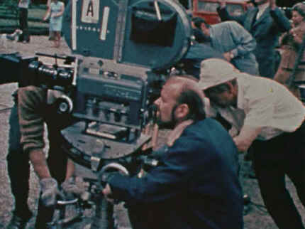
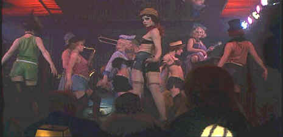

Warner/1972/124m/WS 1.85
 |
Fosse behind the camera©Warner |
Bob Fosse, who also directed
Cabaret on the Broadway stage, made his astounding directing debut one of film's
most memorable. The same audacity that shapes the vision of Fosse's choreography defines
the unity of his filmmaking. The editing on Cabaret is simply brilliant. Quick,
incisive glimpses of the times are inserted around the musical numbers. A level of
discomfort builds around the characters and the course of their lives, as well as the
course of Germany.
Cabaret revolves around the life of expatriate American
entertainer Sally Bowles as she tries to carve out a career for herself in Germany. Sally
lives in a boarding house and works at the decadent Kit Kat Klub, a night spot known for
its naughty point of view. When young Englishman Brian Roberts moves finds a room next to
Sally they become fast friends. Sally and Brian share more than just good times at the Kit
Kat Klub.
The Kit Kat Klub is the core of Cabaret. The club's Master
of Ceremonies introduces the performers, sings and dances with the best of them, and
comments on the times with evil glee. Joel Grey who originated the stage role knows the
character inside out. His performance is amazing. Leering at the audience in hideous
make-up or doing duets with Liza Minnelli, Grey drives Cabaret. Minnelli is no
slouch as Sally Bowles. She and Grey were both won Oscars for their roles. Minnelli belts
out the songs and moves through Fosse's choreography with consummate confidence. It's a
great performance.
 |
Fosse's stunning choreography.©Warner |
This is not the first film
based on the entertaining Christopher Isherwood Berlin Stories. I am a Camera
starred Julie Harris as the plucky ingenue Sally Bowles. But Liza Minnelli puts her own
wax seal on this role with the startling energy she brings to Cabaret.
The transfer to DVD is a big disappointment. The chief culprit is
jumpy detail. Check out some of the scenes showing Belgium Block streets. Jump city. There
are far too many instances of image jitter. The Kit Kat Klub scenes are impressionistic
and often shot through smoke to capture the nightclub atmosphere. The result is a grainy
look. The transfer does not handle the grain with consistent success. There are times when
the grain appears too stationery in relationship to the film frame. There are instance
when the color lacks punch.
The special edition includes a short documentary of remembrances
of the film from Cabaret's stars Liza Minnelli, Joel Grey, and Michael York. Creators
Kander and Ebb, who wrote the musical for Broadway add their comments and screenwriter Jay
Presson Allen and producer Cy Feuer add their observations. There's also a promotional
short "The Recreation of an Era" about the making of the film. The documentary
can be accessed in two ways: in a linear fashion from or from a gallery of the principals
involved accessing their indexed comments.